/website graveyard
january 2, 2026
Ever since I had to make a Wix site in eighth grade art class, I've been
obsessed with my online portfolio. I check on it relentlessly—as if it
would explode the second I looked away—and update it constantly. The
website preoccupation started as a preteenaged act of self-expression, a
claiming stake on my own existence in an environment where I felt
invisible. As I grew up, the website evolved into a representation of my
career.
Here I present to you a deeply embarrassing chronicle of almost every
website I've ever built, starting from (oh god) ten years ago, in the
hopes that it will bring you inspiration and/or entertainment.
chapter one: eighth grade
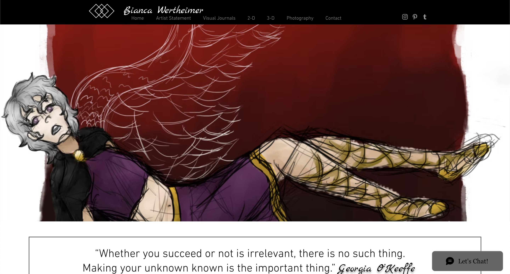
In eighth grade, we were given the option to take one single honors
course: Honors Art Foundations. It was the perfect course; it appealed
to both my chronic overachiever sensibilities and my burgeoning interest
in art. In order to apply for Honors Art Foundations, we had to submit a
portfolio of work. That initial portfolio was the first time I ever took
drawing seriously. I still remember the day I got the acceptance letter
in the mail, and I immediately dialed up my best friend on the landline
to confirm she also got in.
The class ended up being ridiculously rigorous. Every week we had to
submit an assignment that I averaged eight hours working on, and I was
determined to be the best artist in the class (much to my everlasting
despair, I never was). To this day it was the most difficult class I've
ever taken, constantly imbuing me with dread, mortification, and
bitterness. It's also the reason I became a designer.
chapter two: high school
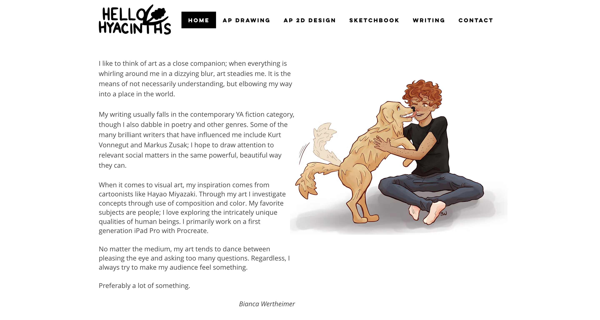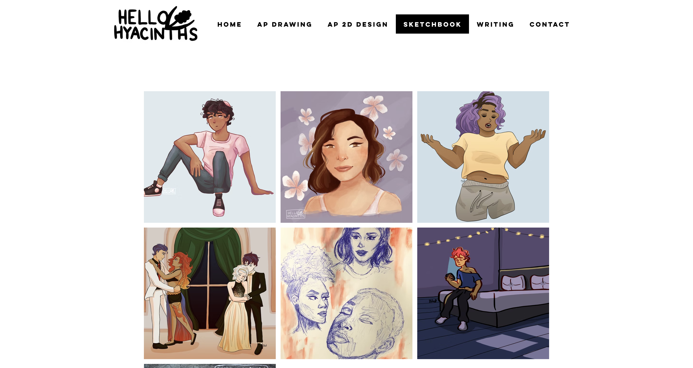
I'm being very brave in sharing the artist statement here, which I
unfortunately had elected to display on the home page at the time. Hello
Hyacinths was an artist name I adopted in high school because I had made
an Instagram account for my art and I wanted a more
professional-sounding tag than biancas_art. I was very fortunate to be
gifted an iPad Pro in high school, where I became immediately taken with
Procreate and digital drawing. Much like middle school, I remember this
era as one of constant self-comparison, but instead of my classmates I
was then comparing my art to professionals online.
chapter three: college
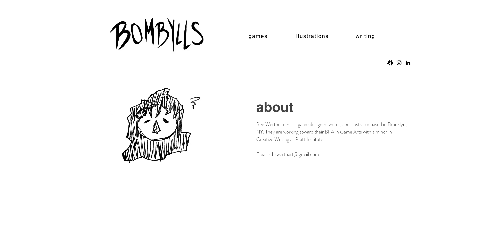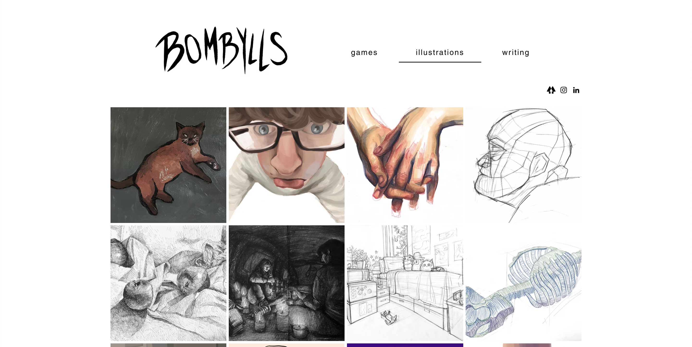
Near the end of high school I rebranded to Bombylls, because I saw
this version
of the word bumblebee as bombyll bee and found it very charming. This
was also around the time I came out as nonbinary and started going by
Bee.
Anyways, this site came around during my freshman year of college, as
you can see by the technical drawings from my foundation year studio
classes. The goofy guy in glasses is my partner
Drew Shapiro.
Also, that email address is defunct. Please do not email it.
chapter four: the carrd era
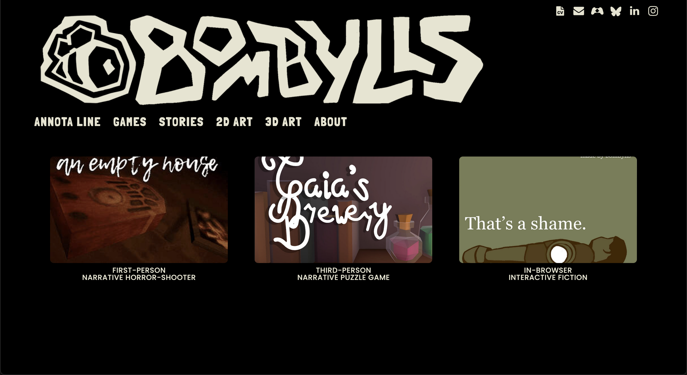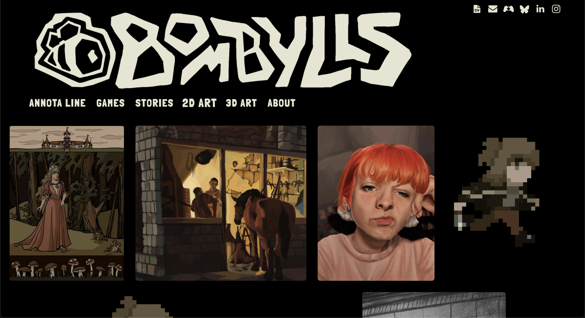
Junior year of college I decided to buy a domain, and switched from Wix
to Carrd because the paid plan was much cheaper. I hardly remember the
Wix interface anymore but I remember feeling frustrated by Carrd's
comparative limitations. If only there were an affordable way to gain
total control over my site...
chapter five: bee finally learns html
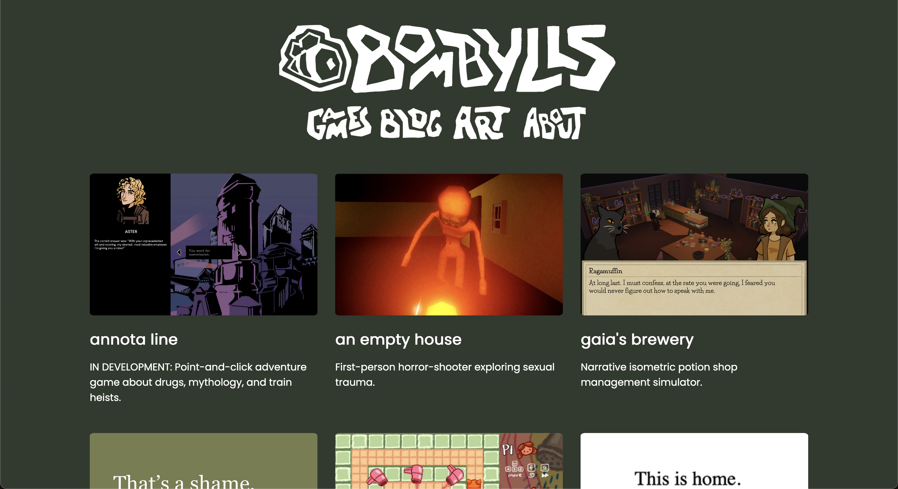
One winter break, it was time. I taught myself HTML and CSS with the
help of
W3 Schools and
made a website using Github Pages. Shout out to
Everest Pipkin
for answering my silly coding questions and being my inspiration!
chapter six: the first overhaul
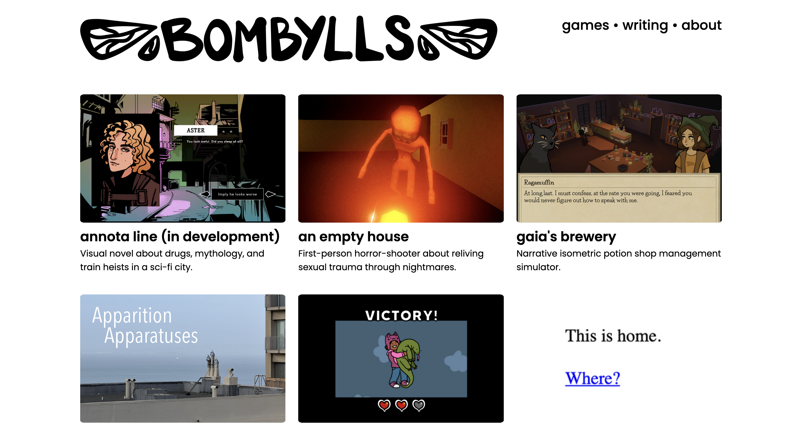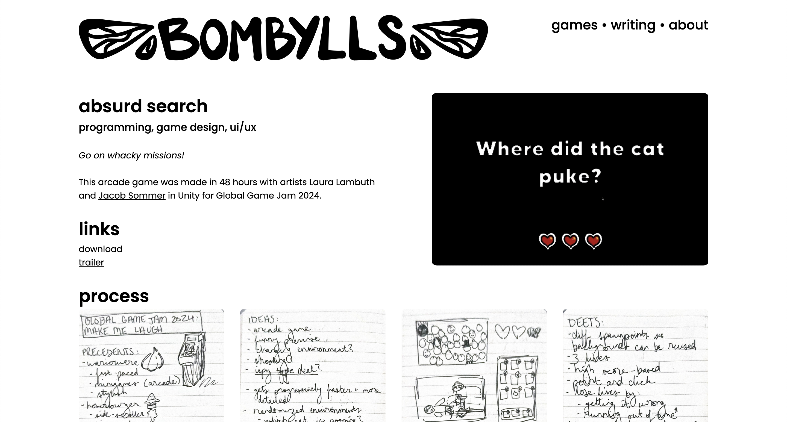
This site design was made in response to feedback that my portfolio
wasn't professional-looking enough. I don't like the branding now but
looking back it was nice that I had process pages for my games. Maybe
I'll bring those back sometime.
chapter seven: the second overhaul
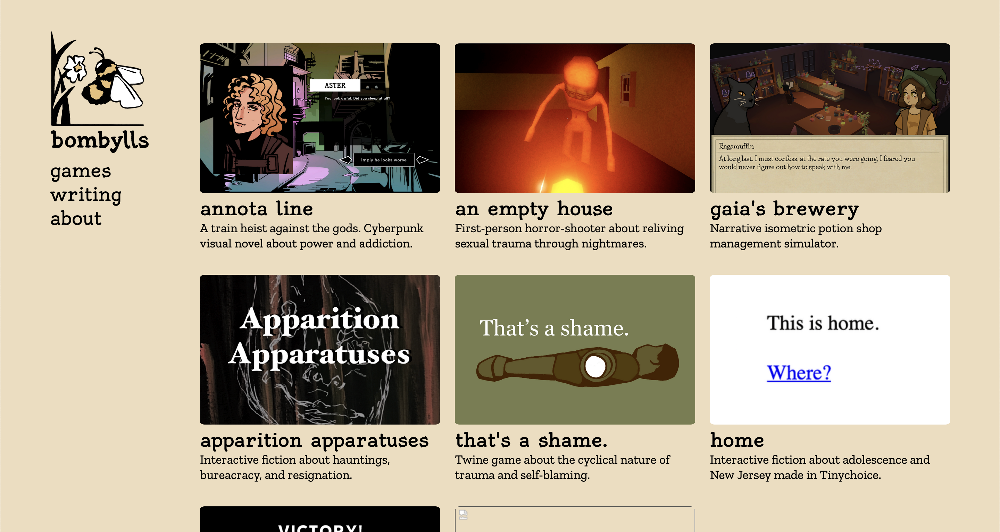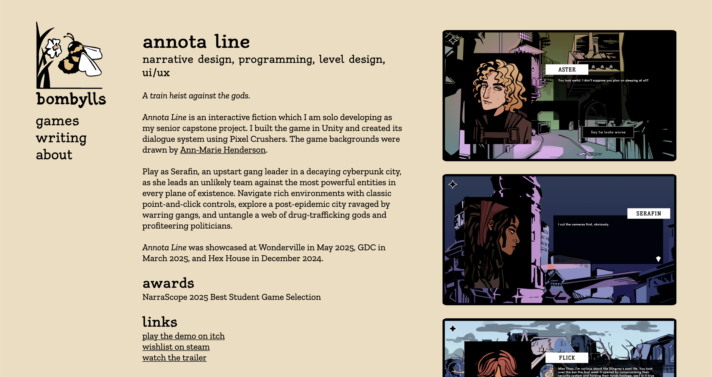
The thing about having complete creative freedom unbound by the
restrictions of a website builder is that I get a little compulsive. I
was going for something with more personality this time around, but it's
giving whimsical storybook in a way that doesn't really represent my
work.
chapter eight: career

A few months after I graduated, I was hired as an editorial intern at
Paste Games, which I found out upon starting was being rebranded as a
new site called Endless Mode. I made this site to commemorate my new
career as a games journalist. I still think it's cute, but it wasn't
modular enough for the amount of articles I was producing.
chapter nine: times new roman
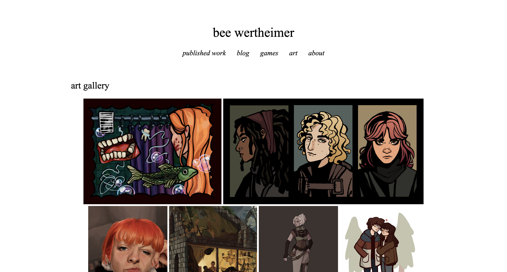
I get depressed during the winter, which you can tell because this year
I became briefly obsessed with Times New Roman. I figured there were
simply too many fonts out there, and this one was pre-installed on every
computer; I didn't even need to download it to my site files. I was also
trying to get a more modular structure going on. Thus spawned the most
boring site design yet, though I really adored it for a while.
chapter ten: present day
I'm not gonna take a screenshot of the current website because you're on
it! I'm very proud of it. It was my quickest turnaround yet—it only took
two days from start to launch—and I think it's the best design so far. I
wanted an archive of every article I've ever written, because a lot of
them unfortunately vanished from my author page when Endless Mode
transitioned to A.V. Club Games.
I chose Courier because
it's one of the pre-installed fonts on every device, and because it
simultaneously evokes typewriters and programming terminals, which I
feel represents my work quite neatly.
Thank you for reading all the way to the end of this! I hope you got
some entertainment out of my decade-long pursuit of the perfect website.
I'm trying to kick my perfectionistic tendencies because they're
paralyzing my design process, so publically displaying some of my most
embarrassing work is, like, creatively necessary. Also it's cool to see
how far I've come.
If you're interested in building your first website with HTML and CSS,
W3 Schools is a
great resource to get started.
Neocities is all at
once a source of inspiration, a hosting site (though I use Github Pages
because it has free custom domain hosting) and a lovely community. I'm
also happy to answer any questions you may have—feel free to email me or
DM me on Bluesky. :)